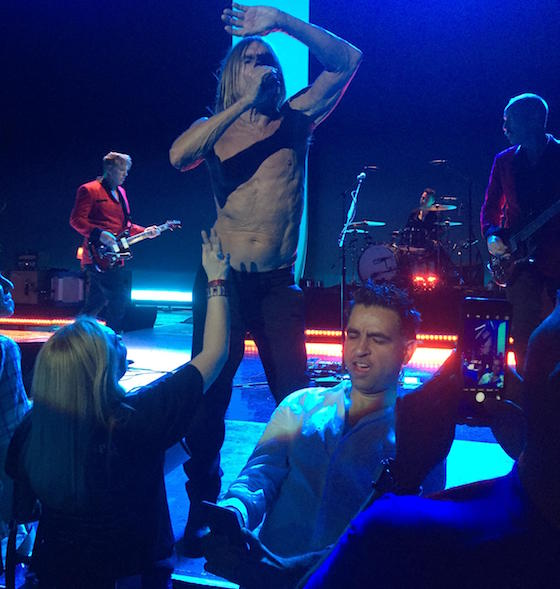

Sell everything you own and run away from home
Who?
Grant Richmond
A.K.A. That Scottish guy with the wooden glasses
I make websites
& other dumb stuff
& I didn't enjoy travel
Boredom
I had a proper job.
So I quit
Then I found something else to do
Then I sold everything I owned
The Present
The pale blue dot

I have realized that the past and future are real illusions, that they exist in the present, which is what there is and all there is.
Don't be that guy
You can record the past
Do something new every day
You wouldn't worry so much about what others think of you if you realized how seldom they do.
My Tools
The internet!

Todo Lists
D.I.Y.
Store all the things!
(without getting in the way of the experience)
Todo
- Click dot to add diary entry
- Better photo handling
- Animate zooming around the map
- Nice diary view that only I can see